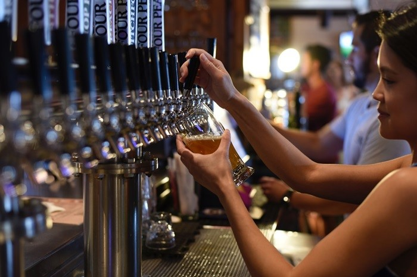

Led party
Party ul cu leduri care leaga noi prieteni

Locul cu bere
Aici poti sa iti iei ce tip de bere vrei si cat.
Tipurile de alcool
Aici avem o diversitate de alcool de la vodka la gin.
Bere
Berea cel mai important de la bar si nu poate lipsi.

Prietenii
Toata lumea estte prietenoasa si promovam bunatatea.